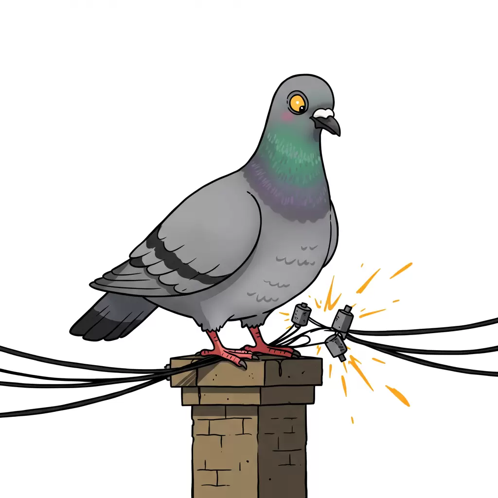
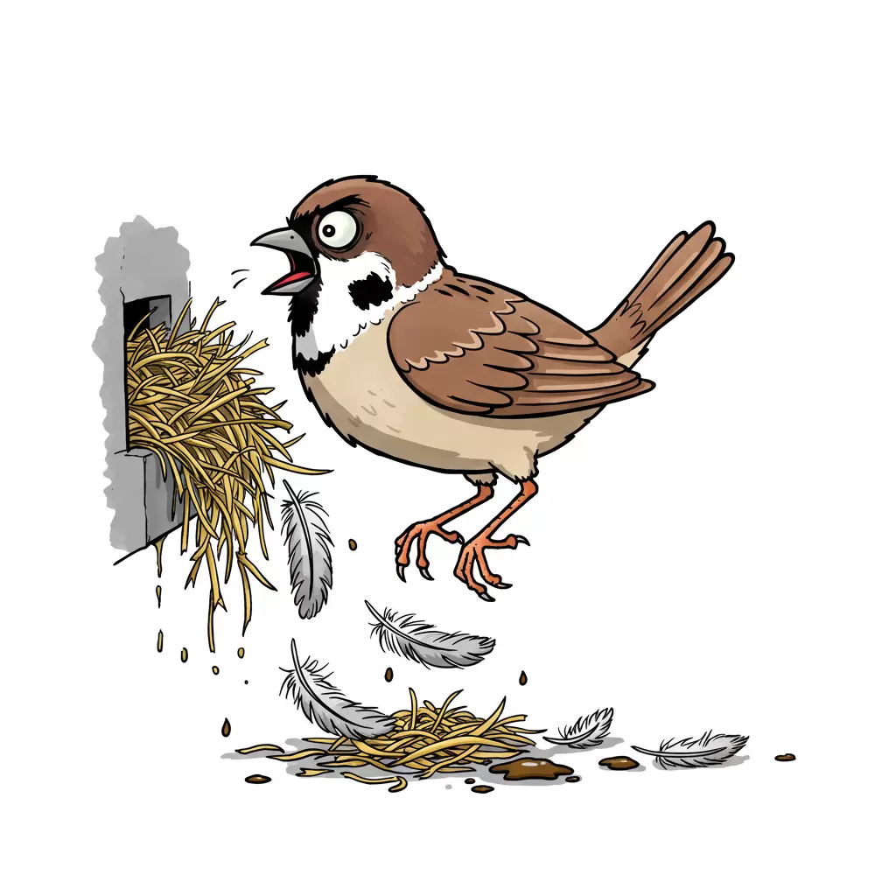
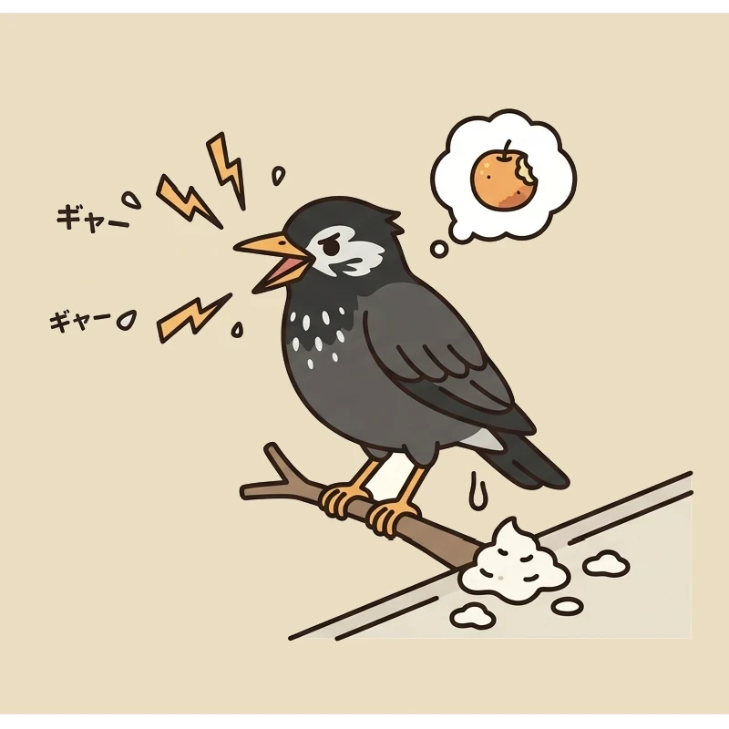
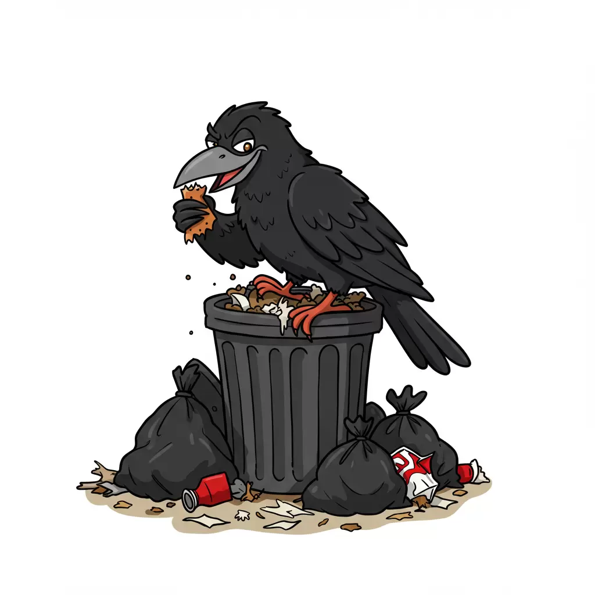
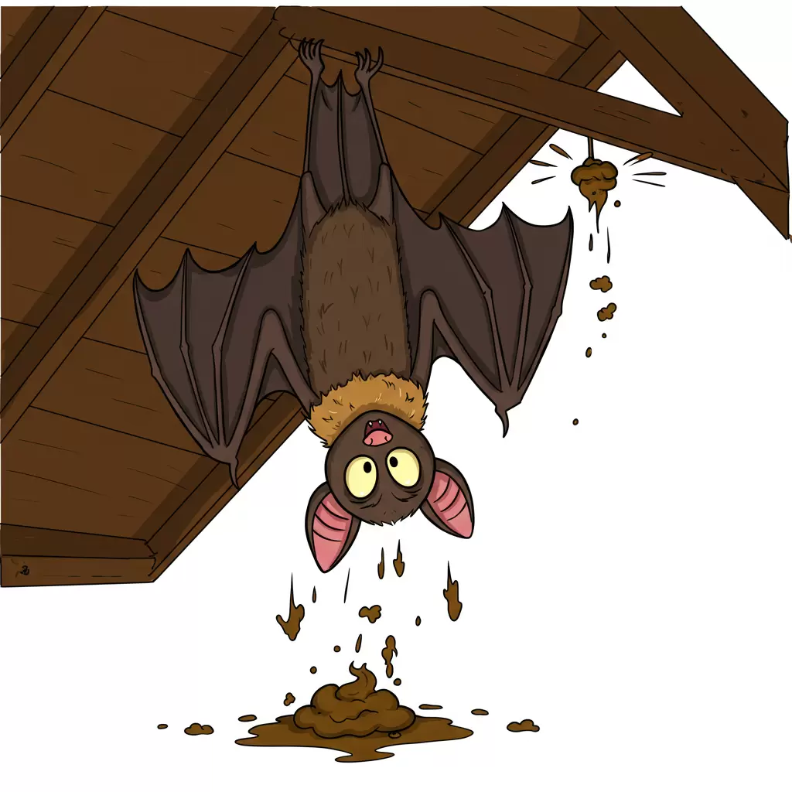
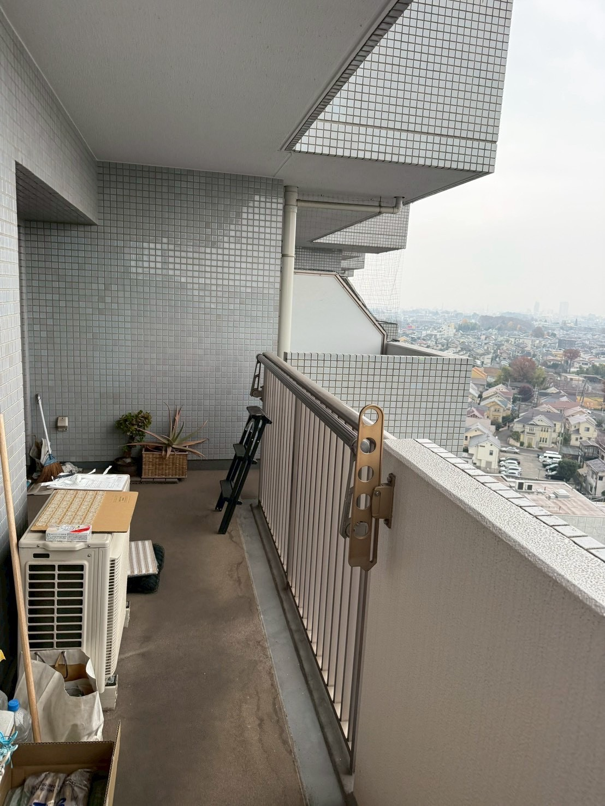
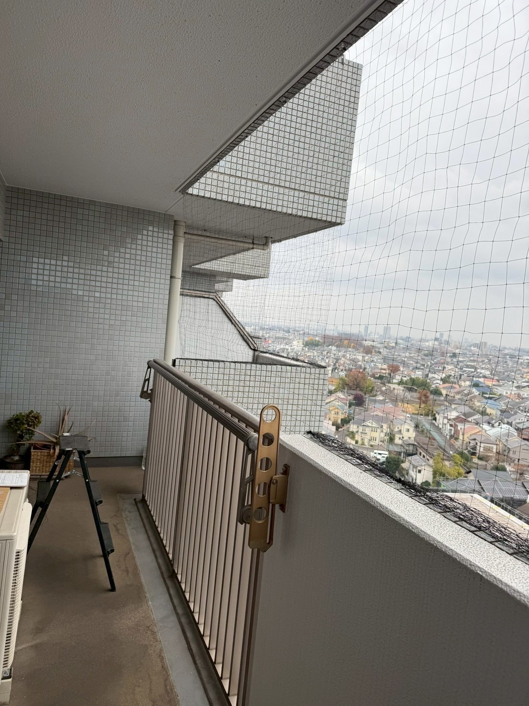

あらゆる場所の害鳥対策に対応 戸建てから大規模施設まで建物の構造に合わせた最適な施工をご提案します

戸建て・マンション
ベランダの糞害や屋根裏の浸入など、住まいの美観を損なわない施工を行います。

店舗・オフィス・公共施設
お客様の出入りを妨げず、施設の衛生環境とブランドイメージを徹底的に守ります。

工場・倉庫・大規模施設
高所作業や広範囲のネット展張など、特殊な環境下での防除も熟練の技術で完遂します。
関東エリア最短30分・完全自社施工
24時間365日受付中





ベランダの糞害や屋根裏の浸入など、住まいの美観を損なわない施工を行います。
お客様の出入りを妨げず、施設の衛生環境とブランドイメージを徹底的に守ります。
高所作業や広範囲のネット展張など、特殊な環境下での防除も熟練の技術で完遂します。

鳥が嫌がる特殊な成分を設置。視覚・嗅覚・触覚に訴えかけ、自然に寄り付かない環境を作ります。

目立ちにくい素材を使用し、建物の美観を損なわず物理的に侵入を100%遮断します。

手すりや梁など、鳥が止まりやすい場所に設置。着地を物理的に防ぎ、休憩場所を与えません。

マンションのベランダ手すり等に最適。細いワイヤーで着地を不安定にさせ、飛来を防止します。
※被害のレベル（休憩・待機・巣作り）に合わせて、これらを組み合わせた「オーダーメイドの防除設計」を行います。
| 比較項目 | 害鳥レスキュー侍 | 他社（仲介サイト） |
|---|---|---|
| 施工価格 | 業界最安水準 3,000円〜 | 33,000円〜（仲介料込） |
| 施工担当 | 熟練の自社職人 | 下請け業者（誰が来るか不明） |
| 広告・紹介料 | 0円（自社集客） | 施工代金の30%〜40% |
| アフター保証 | 最大5年保証 | 保証なし or 別途有料 |
※仲介業者や無駄な広告費をカットすることで、その分をお客様への施工品質と価格に還元しています。
「害鳥レスキュー侍」による、実際の解決実績の一部をご紹介します。


長年放置された糞の清掃・消毒後、目立たない高耐久ネットを設置。景観を損なわずに100%の防鳥を実現しました。
屋根上のソーラーパネルの隙間に作られた巣を撤去。専用のガード材を隙間なく施工し、再侵入を完全にシャットアウト。
LINE・電話・フォームより、現在の状況やご相談内容をお伝えください。
作業員が現場へ急行。被害状況を調べ、その場で明朗な御見積書を提示します。
熟練の技で、鳩をはじめとする害鳥を二度と寄せ付けない施工をします。
施工後、万が一鳥が戻れば無償で再施工。最長で5年保証いたします。
ベランダの鳩の糞でノイローゼ気味でしたが、見積もり当日にすぐ作業してくれました。他の大手より3万円近く安くて驚きました。職人さんも丁寧で安心しました。
ソーラーパネルの隙間に巣を作られて困っていました。ネット設置だけでなく、パネルの洗浄までやっていただき感謝です。侍さんにお願いして本当に良かったです！
倉庫のムクドリ被害で相談。ワンストップ運営というだけあってレスポンスが非常に速い。コストも予算内に収まり、法人としても非常に助かりました。
お問い合わせ前によくいただくご質問をまとめました。
いいえ、ございません。「害鳥レスキュー侍」では現地調査に基づいた詳細な見積書を提示し、ご納得いただいた上で施工を開始します。作業後にお見積り以上の金額を請求することは一切ありませんのでご安心ください。
大手集客サイトのような「仲介手数料（施工代金の30〜40%）」が発生しない直営店であること、そして過度な広告費をカットしているためです。浮いたコストをすべてお客様への施工価格と品質に還元しています。
もちろんです。ベランダの鳩の糞清掃から、ネット設置による再発防止まで1箇所から承ります。お隣の住戸に迷惑をかけないよう、細心の注意を払って施工いたします。
ソーラーパネルの隙間は鳩にとって絶好の営巣場所です。パネルを傷つけない専用の防鳥具の設置と、パネル下に溜まった糞の洗浄・消毒まで一貫して対応可能です。放っておくと故障の原因にもなるため、早めの対策をお勧めします。
はい、安全です。当社で使用する忌避剤（鳥が嫌がるジェル等）は、人体や動物に無害な天然成分由来のものを選定しております。施工場所や状況に合わせ、最適な安全対策をご説明いたします。
はい、全く問題ございません。お見積り内容にご納得いただけない場合は、その場でお断りいただいて構いません。もちろん、出張費やキャンセル料をいただくこともございませんので、お気軽にご相談ください。
最短30分で現場へ駆けつけます。
相談・現地調査・見積りは完全無料です。
24時間365日受付中
📞 050-8895-4505